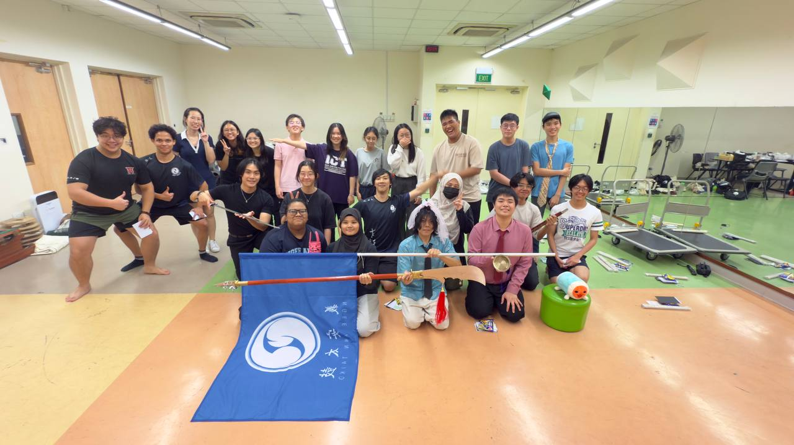

Who are we?
NP Taiko is a performance group from Ngee Ann Polytechnic, who specialize in the Japanese art of Taiko drumming.
We are a division of the larger Japanese Culture Club and we perform at many events both inside and outside of our school!